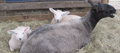

| Lambs Lambs are born in mid April, so they will be big enough to go out on the spring grass in May. The new grass in May provides the ewe with an excellent source of food, so she can make plenty of milk for her nursing lambs. Ewes have two teats, but can have one, two or three lambs. Singles get a lot to eat, twins have their own teat and triplets have to share. Lambs can weigh anywhere from seven to fourteen pounds. Ten or eleven pounds is an average weight. |
||||||||||||||||||
| Waiting… | ||||||||||||||||||
| Keeping ewes healthy can avoid problems with gestation, birthing, lactation, and lambs nursing. Ewes are wonderful mothers, licking the lambs all over after they are born. Lambs are standing, rooting for the teat and nursing within 10 to 30 minutes after birth. The ewe’s first-milk, colostrum, is nutritious and contains everything a new lamb needs to start life and be healthy. It is also high in antibodies which protect the lamb against almost all bacterial, viral and fungal infections and disease. New born lambs nurse frequently. I saw a ewe gently paw her sleeping lamb that it was time to nurse. The ewe teaches twin lambs to nurse at the same time. |
||||||||||||||||||
|  | ||||||||||||||||||
| Ewes and their new lambs are put in a “lambing jug.” Separated from the rest of the sheep, so the ewe can bond and take care of her lambs, and the lambs can begin to nurse. Lambs are weighed daily for the first week, and gain between 1/2 to 1 pound a day. | ||||||||||||||||||
| Lambs begin nibbling on hay the first week, eating more and more until they start to eat grass. | ||||||||||||||||||
| In about a week, when the lambs are bonded to their mother and are nursing well, they are combined with another ewe and her lambs. As they are ready, they are combined with other groups. | ||||||||||||||||||
| Ewes are very patient with their nursing lambs. | ||||||||||||||||||
|
Phoebe with her triplets
|
||||||||||||||||||
| All the ewes and lambs are in one group. The afternoon is time for the lambs to rest and the ewes to chew cud.
Around 6:00 pm the lambs are full of energy and run and jump all around. |
||||||||||||||||||